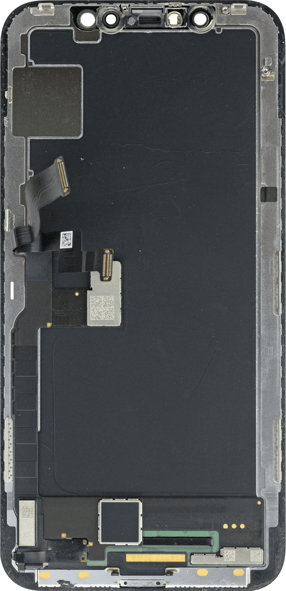
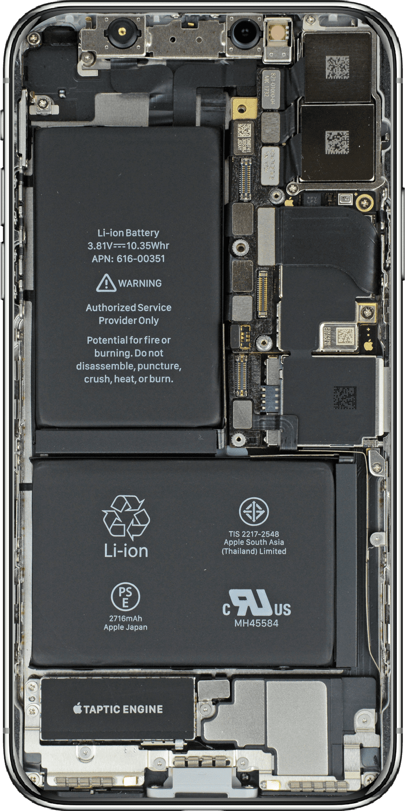
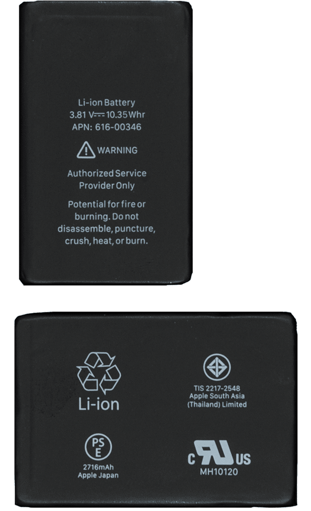
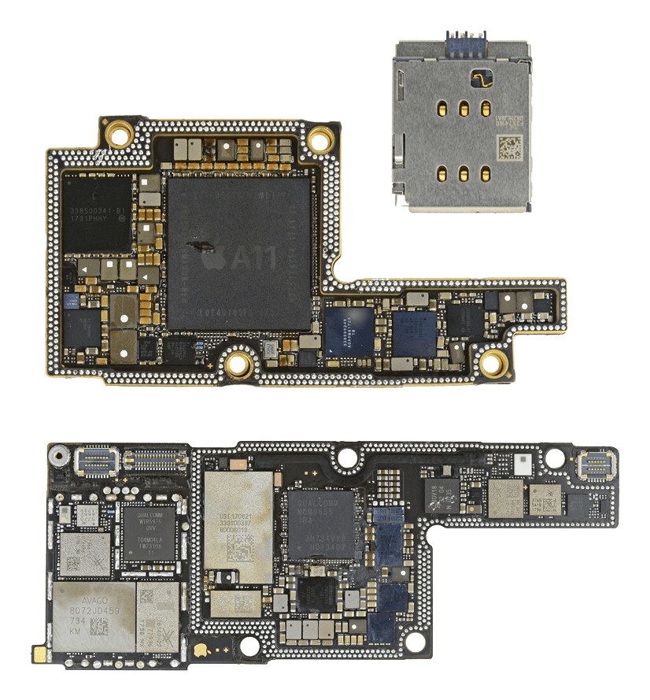
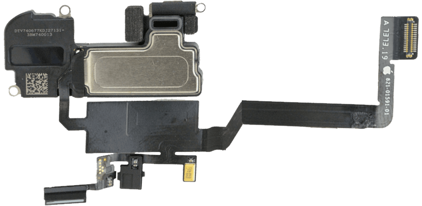
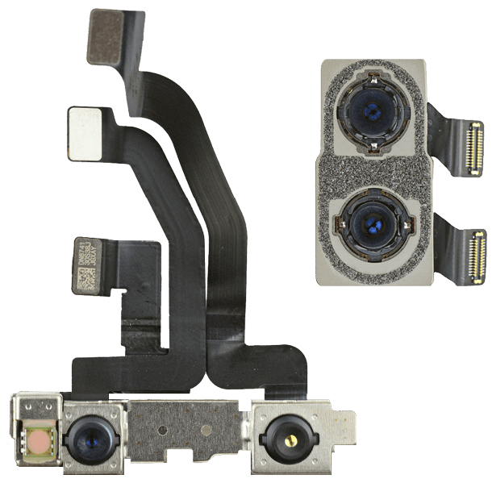
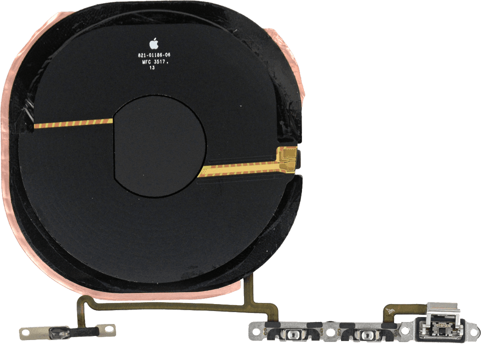
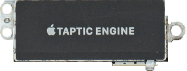

Slicing the Apple Economy
Contrary to popular belief, Apple doesn't itself make the iPhone. In fact, the company neither manufactures nor assembles the components into the finished products we see on display. The parts come from a variety of suppliers and the assembly is ultimately carried out by Foxconn, a Taiwanese company. Apple, then, is essentially a technical designer. Chances are, these facts are not very surprising to you, the astute iPhone user who noted the following discretely inscribed on the back: "Designed by Apple in California. Assembled in China."
On the other hand, if Apple’s vast supply chain perplexes you, maybe it's because you haven’t seen the internals of a smartphone. Hint: it's pretty elaborate . To help you visualize this, I'm going to use images from this Bloomberg piece which estimates the cost of the iPhone X's core-of-core components: the flash memory, DRAM, camera chip and processor.
Internals of an iPhone X
Let's crack it open
-
iPhone X
Designed by: Apple
Retail: $995
-

Super Retina HD Display
Cost: ~$100
Manufacturer: Samsung
The display is the most expensive component in an iPhone, making up +25% of the total manufacture and assembly cost
-

The Rest (80%)
Cost: ~$350
Manufacturer: ~600 firms from 4 continents and 20+ countries
-

2716 mAh lithium ion batteries
~$6
Samsung Electronics, LG Chem, Desay...
-

A11 processor
~$27
TSMC
Wi-Fi chip
~$7
Broadcom, Murata, TSMC, UMC, USI...
Flash memory and DRAM
~$16
Micron, SK Hynix, Samsung Electronics
MDM9655 or XMM 7480 moden
~$10
TSMC
59355 wireless charging chip
~$10
Broadcom
-

Proximity sensor, light sensor, speaker, microphone
~$19
Cirrus Logic, Bosch, Texas Instruments, NXP, Avago, Qualcomm...
-

Rear and front camera
~$35
Sony, Omnivision...
-

Wireless charging coil
~$35
N/A
-

Taptic Sensor
~$20
Nidec...
To reduce information clutter, this graphic is intentionally limited to display only the major components in an iPhone and their manufacturers/assemblers. That is not to say that we couldn't be inventive and study the 600+ suppliers and their ultimate contributions. These firms collectively represent 98% of the raw materials, manufacture and assembly of Apple products. The data comes from Apple's most recent supplier list.
Annual Supplier List
630 firms, dated Feb 2018
For brevity, I am only showing the first page of Apple's long address book of suppliers. There is actually a better way to visualize this document—a map. I did the hard work of scraping the addresses in the document and converting them into lattitude longitude coordinates that can be used to visualize the geographic diversity of Apple's supply chain using an air route map.
Geographic Footprint of Apple
Pan, zoom and hover on the interactive map
Here is what we can gather from playing around.
- 1. Asia is heavily involved in the manufacturing and assembly process.
- 2. Europe and North America are moderately involved.
- 3. Africa, South America and Oceania play a very small role. There may be an explanation for this (see immediately below).
- 4. Raw materials producers from Africa, South America and Oceania are noticeably absent. Apple seems to only include firms which are involved in the intermediate product and process.
- 5. China, South Korea, Japan and Taiwan house the majority of suppliers. The big names are Samsung, SK Hynix, LG, Panasonic, Sharp, TSMC and Foxconn.
- 6. Apple does involve a fair number of U.S. suppliers, most notably Micron, Intel and Qualcomm.
- 7. Each address does not represent a unique supplier. A single company may have multiple divisons/offices which contribute differently. Samsung is represented more than ten times in this map through its many global subsidiaries and offices.
Let's distill this even further by generating a leader board of the countries with the largest number of registered addresses involved in Apple's supply chain.
So who really makes the iPhone?
Evidence from Apple's Supply Chain document
Number of addresses registered as Apple supplier
The take-away from all of this? Apple is just as much an international employer as it is a domestic one, owing to the iPhone's global supplier footprint. How did it get to this? After all, it was only 12 years ago that Apple was producing the iMac from its Elk Grove plant. How did companies with foreign names like Foxconn and Kyocera get involved? The answer? Scale. In terms of units sold, the iPhone is the most successful consumer product ever created. More than 1.2 billion iPhones and 15 distinct models have been sold since January 2007. For Apple, producing devices in the hundreds of millions annually required answering many technical and economic questions. The good answers, almost every time, were founded by a global community and labor force.
Though components differ between versions, modern iPhones contain nearly 500 parts, an estimated 90 percent of which are manufactured and assembled outside of the United States. Advanced semiconductors have come typically come from Germany and the U.S., memory from Korea and Japan, display panels and circuitry from Korea and Taiwan and raw materials from Africa and South America. And everything is put together in Shenzhen, China and finally distributed to their ultimate destinations over the seas by several 200,000 ton transport vessels operated by a Danish-operated but Japanese financed container shipping company. If that isn't one of the most complete representations of modern international trade and economic growth, I don't know what is.
Notes
Scraping a PDF document is a notoriously difficult job. For this piece, I used a Java program called Tabula to accurately parse any tables in Apple's Supply Chain document. With those addresses in a neat CSV file, I used Google's Geocoding API to derive the lat lon coordinates. To ensure their accuracy, I plotted each lat lon coordinate on a map to see if they returned accurately.
Many thanks to the people at Bloomberg, especially Max Chafkin and Ian King who published this wildly popular piece in the Fall of 2017. Their work has long been an inspiration to me, and I would like to thank them for their crisp images of each iPhone component that are the foundations for my own piece.